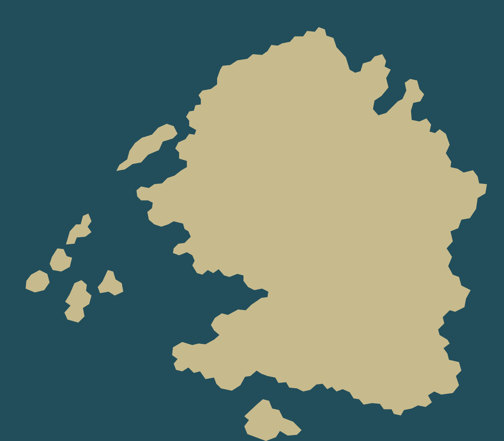
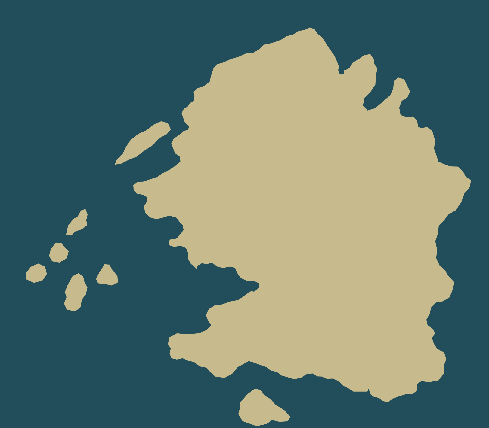
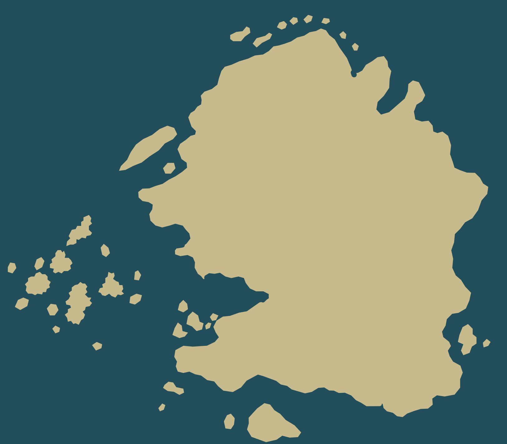
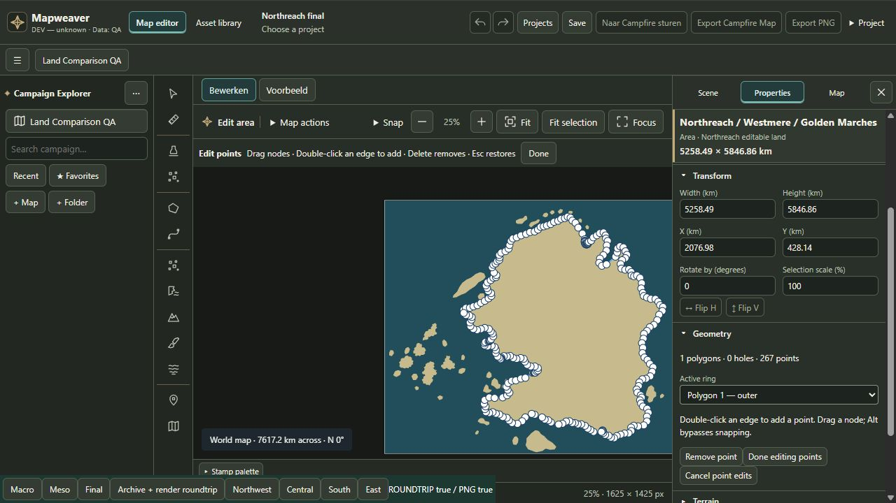

Technisch native en bewerkbaar. Visuele premiumacceptatie: NIET bereikt. Zie het verschil in de vergelijkingen.
Bewerkbare kaart · Echte native PNG · Rapport · Beoordeling · Referentie / V1 / V2 / proof

Drie native fasen:



complex-bay · peninsula · islands · quiet-coast
